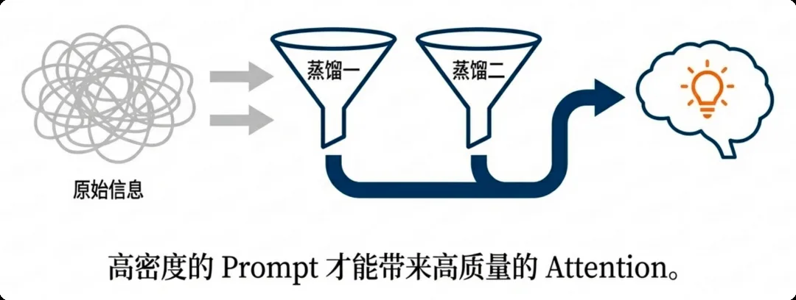

Semantic Layer: Double Distillation
Format tax is cut. Next look at the content itself. The most common engineering mistake in RAG and long-document work: treat the context window as a dump—stuff every Few-Shot example and retrieved doc in, and hope the model sorts it out. It works. It shouldn't.
First: expensive and slow. Transformer self-attention is O(N²): double the prompt length, and compute grows 4×. Longer prompts mean longer Prefill and higher time to first token—users lose patience before they see the first character.
Second: quality can get worse. When signal drowns in filler, you get the lost-in-the-middle effect. Like a person reading a long article: they focus at the start (what's this about?), pay attention at the end (here's the conclusion), and skim the big middle blob—eyes pass, brain doesn't. If your carefully picked references land in the middle, the model may never really read them.
The color strip simulates attention strength across Prompt positions (green = strong, gray = weak). Drag the length and watch the middle sag.
Take Text-to-SQL: to cover every business case, some people hard-code 20 SQL examples into the Prompt—4,000+ Tokens total. Every user question, the model “reviews” all 4,000 first: burns Tokens and runs slow. Better approach:
Store the 20 examples in a vector database.
When the user asks “last month's sales,” use semantic retrieval to pull only the Top-3 finance-related examples.
Final Prompt drops from 4,000 Tokens to 500.
(no irrelevant-example noise)
Financial research, meeting notes—docs packed with “correct filler”: disclaimers, repeated background, spoken padding. Feed that to the AI and you're paying PhD rates to read spam.
Fix: after RAG retrieval and before inference, insert an LLMLingua-2 middleware. It doesn't chop words blindly: BERT bidirectional attention sees both sides of context, pinpoints core semantics (entities, numbers, key verbs), and strips redundant noise. Compress 5–20×; Prefill that took 1 second drops to 50 ms—high-concurrency throughput jumps a full order of magnitude.

| Distillation | Target | Method | Typical gain |
|---|---|---|---|
| First pass | Few-Shot examples | Vector retrieval picks Top-K dynamically | 4,000 → 500 Tokens |
| Second pass | Retrieved documents | LLMLingua-2 semantic compression | 5–20× compression; Prefill 1s → 50ms |
Double the prompt = 4× the compute: O(N²) is why long context is both expensive and slow.
Lost-in-the-middle: put critical info at the start or end; leave the middle for content you wouldn't mind losing.
Don't hard-code Few-Shot—store in a vector DB and retrieve by question: save 87.5% and get more accuracy.
Run long docs through LLMLingua-2 before inference: high-density Prompt for high-quality Attention—don't lose users while they wait.
Source: Adapted from the author's internal team share “AI Token Cost Engineering Strategy” hands-on section “02｜Semantic Layer.” For lost-in-the-middle, see Chroma's Context Rot research; compression benchmarks at LLMLingua. Review context-window basics in Harness Core · Context Window.